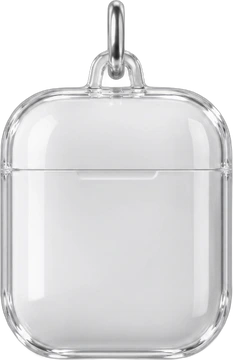

웨어러블 AI 에이전트 · UX 리서치 프로젝트
피할 수 없는 순간에도,
피할 수 없는 순간에도,
할 수 있는 대응을 찾습니다.
만원 버스, 업무 중인 자리, 옆집 소음처럼 바로 벗어나거나 바꾸기 어려운 곳에서 감각 부담이 생기면 할 수 있는 일이 금방 줄어듭니다. 지금 가능한 대응을 먼저 제안하고, 무언가를 바꾸기 전에는 꼭 묻는 워치·이어폰 에이전트를 기획했습니다.
지금 조금 힘드신가요?- 키워드
- 감각 부담 · 개인화 대응
- 기기
- 스마트워치 · 이어폰 · 폰
- 리서치
- 논문 13편 · 인터뷰 2명
- 과정
- Double Diamond
01Overview
자극을 없애기보다,
지금 할 수 있는 방법을 연결합니다.
감각 부담은 사람마다 다르고, 같은 사람도 피로와 기분, 주변 환경에 따라 달라집니다.
특히 바로 벗어나기 어렵거나 주변을 직접 바꾸기 어려운 순간에는 쓸 수 있는 대응이 줄어듭니다.
기존 서비스는 기록, 체크인, 환경 확인처럼 한 단계씩만 도와서 사용자가 먼저 움직여야 합니다.
그래서 현재 상태와 상황을 함께 보고, 그 순간 가능한 대응을 이어 주는 흐름을 설계했습니다.
- STEP 01AI 상황 해석알아차리기
지금의 상태와 주변 자극을 함께 살펴봅니다.
- STEP 02사용자 선택대응 고르기
노이즈 캔슬링처럼 지금 가능한 방법을 제안하고,
적용은 사용자가 정합니다. - STEP 03사용자 확인다음에 반영하기
대응 후 나아졌는지 확인하고 다음 판단에 씁니다.
02Research
문제는 한 번의 자극보다,
매일 반복되는 대응이었습니다.
“한 번의 큰 자극보다 이런 과정이 매일 이어진다는 점이 더 피곤해요.”
참여자 1 · 셀프 일리시테이션 인터뷰
“도움 요청처럼 다른 사람과 연결되는 건 자동으로 하지 않았으면 좋겠어요. 얼마나 심각한지 제가 먼저 판단하고 싶어요.”
참여자 2 · 코디자인 인터뷰
Define 이후 단계(문제 정의 · 아이디어 · 프로토타입 · 테스트)는 지금 정리하고 있어요.